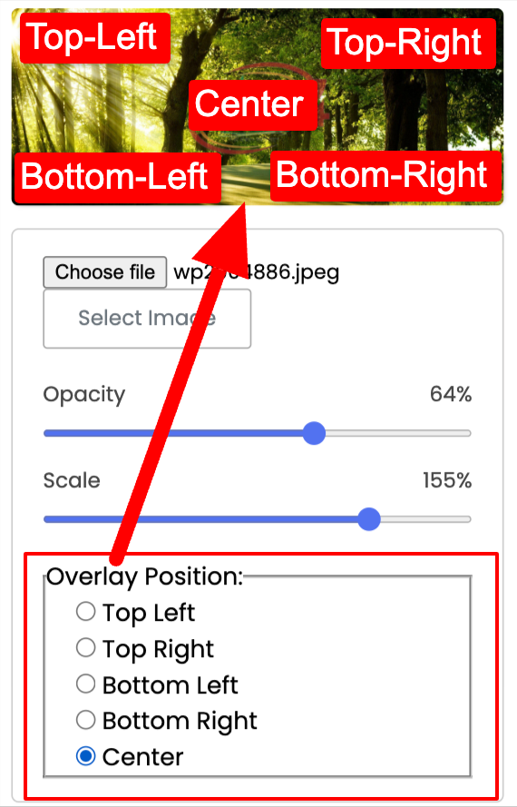

কিভাবে Our Nikli-24 কপিরাইটার ব্যবহার করবেন
সফটওয়্যার এ যান

ধাপ ১ঃ ছবি পছন্দ করুন
যে ছবি তে লোগো বসাতে চান সেই ছবিটি নির্বাচন করুন।


ধাপ ২ঃ দৃশ্যমানতা সেট করুন
লোগো টি আপনার ছবি তে কতটা দৃশ্যমান হবে তা সেট করুন।

ধাপ ৩ঃ লোগোর সাইজ সেট করুন
লোগো টি কতটুকু বড় বা ছোট হবে তা সেট করুন।

ধাপ ৪ঃ লোগোর অবস্থান নির্বাচন
লোগো টি ছবির কোন অংশে বসাতে চান তা এখান থেকে সিলেক্ট করুন।
ধাপ ৫ঃ অতিরিকত বাটন
যদি কোন কারণে লোগো সাইজ, দৃশ্যমানতা, অবস্থান সেট করার পর তা ছবিতে আপডেট না হয় তবে এই বাটনে ক্লিক করুন। নতুবা এই বাটনে ক্লিক করার দরকার নেই।
ধাপ ৬ঃ ছবি ডাউনলোড করুন
ডাউনলোড বাটনে ক্লিক করে ছবিটি ডাওনলোড করুন। বাটনে ক্লিক করে ৫-১০ সেকেন্ড অপেক্ষা করুন কাড়ন ফুল রেজুলেশন এর ছবিটি আপনার ডিভাইসের ক্ষমতা অনুসারে তৈরী হতে কিছুটা সময় লাগতে পারে।
ধাপ ৭ঃ যদি ডাউনলোড বাটন কাজ না করে
যদি ২০ সেকেন্ড বা তারও বেশি সময় পার হয়ে যায় কিন্তু ডাউনলোড শুরু না হয় তবে ডাওনলোড বাটনের নিচে দৃশ্যমান হওয়া "এখানে ক্লিক করুন" এ ক্লিক করুন।